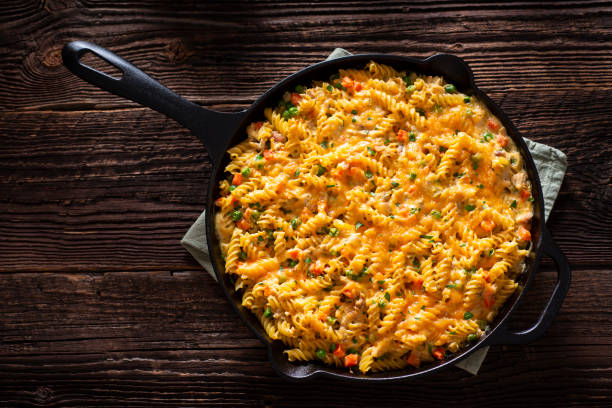

Mac and cheese Recipe

Macaroni and cheese is a pasta dish of macaroni covered in cheese sauce, most commonly cheddar sauce. Its origins trace back to cheese and pasta casseroles in medieval England..
Ingredients
- Macaroni
- Butter and flour
- Whole milk
- Cheddar and parmesan cheese
- salt, pepper and paprika
- bread crumbs
Making the Mac and cheese
- Boil the noodles, drain, and transfer to a prepared baking dish
- Make the cheese sauce, pour the sauce over the noodles, and stir
- Make the topping, spread it over macaroni and cheese, and sprinkle with paprika
- Bake the mac and cheese until the topping is golden brown